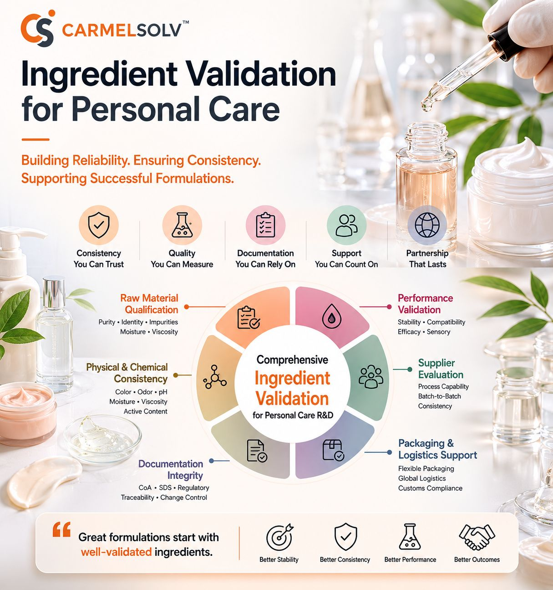

In personal care formulation, one of the most difficult challenges is the transition from laboratory development to larger-scale production.
A formula that performs well during bench testing may behave differently during pilot or commercial manufacturing. In some cases, formulators may encounter phase separation, viscosity drift, color variation, odor changes, or changes in sensory profile after scale-up.
These issues are not always caused by the formula design itself. Sometimes, they are connected to subtle differences in raw material quality, impurity profile, water content, lot consistency, or supplier control.
For this reason, ingredient validation is becoming increasingly important in personal care R&D.
Why Scale-Up Stability Depends on Raw Material Consistency
Personal care products are often built from a complex ingredient system.
This system may include:
- Polyols
- Multi-functional diols
- Surfactants
- Rheology modifiers
- Solubilizers
- Emollients
- Active ingredients
- Preservative systems
- Fragrance components
Each material contributes to the final product's stability, texture, appearance, sensory performance, and manufacturing behavior.
When one component changes from batch to batch, the effect may be small at first. But during larger-scale production, even minor raw material differences can become more visible. This is especially true in emulsions, gels, serums, dispersions, and systems that depend on a careful balance between water phase, oil phase, thickener network, and functional additives.
The Role of Basic Ingredients in Advanced Formulations
In premium personal care products, advanced actives often receive the most attention. However, the basic raw materials behind the formulation are just as important.
Materials such as propylene glycol, glycerin, butanediol, surfactants, and other functional carriers can influence:
- Solubility
- Moisture balance
- Viscosity behavior
- Emulsion stability
- Sensory profile
- Freeze-thaw behavior
- Preservative compatibility
- Active ingredient delivery
- Processing consistency
These ingredients may appear simple, but they often help determine whether a formulation remains stable during development, production, filling, storage, and consumer use.
A high-performing active ingredient cannot compensate for an unstable formulation foundation.
Molecular and Functional Considerations
At the molecular level, personal care formulations depend on many small interactions.
Hydrogen bonding, hydrophilic-lipophilic balance, water activity, polarity, viscosity contribution, and compatibility with polymeric thickeners can all affect the final product.
For example, multi-functional diols such as propylene glycol may influence moisture retention, solvent compatibility, and interactions with thickener systems. Surfactants may affect emulsification and dispersion behavior. Polyols may influence texture, humectancy, and freeze-thaw performance.
Because these interactions are complex, consistency matters.
A change in impurity profile, moisture level, odor, color, pH, active content, or viscosity range can make it harder for R&D teams to understand whether a performance issue comes from the formulation itself or from raw material variation.
Ingredient Validation in Personal Care Development
Ingredient validation is not just about checking whether a material is available.
A responsible validation process may include reviewing:
- Purity
- Identity
- Moisture content
- Odor profile
- Color
- pH, where applicable
- Viscosity, where applicable
- Impurity profile
- Batch-to-batch consistency
- COA availability
- SDS documentation
- Regulatory and compliance information
- Traceability
- Packaging condition
- Supplier communication and change-control practices

For personal care R&D teams, this type of evaluation helps reduce uncertainty before scale-up.
The goal is not to eliminate all formulation risk. That is not realistic. The goal is to reduce avoidable raw material variability so formulators can make better technical decisions.
Supporting Lab-Scale and Scale-Up Workflows
At CarmelSolv, our role is not to replace the work of formulators.
Our role is to support the scientists, laboratories, and product development teams who do that work.
During early-stage formulation, many teams need small, consistent quantities for screening, prototype development, compatibility testing, and batch modification work. These teams may not need bulk industrial volume at the beginning. They need practical sample sizes, clear documentation, and responsive supply support.
As a formulation moves closer to scale-up, consistency between the evaluated material and future production lots becomes increasingly important.
This is where supplier discipline matters.
A stronger raw material supply process should support:
- Lab-scale sampling
- COA and documentation review
- Lot traceability
- Packaging flexibility
- Clear communication
- Batch consistency expectations
- Future scale-up planning
This helps reduce the risk of surprises when moving from initial validation to larger-volume production.
Why This Matters for Clean Beauty and Modern Personal Care
As personal care markets continue to move toward clean beauty, alternative preservation systems, sensitive-skin positioning, and more complex sensory expectations, raw material consistency becomes even more important.
Many modern formulations rely on careful balance rather than heavy over-formulation. That means small differences in ingredient quality or compatibility may have a greater effect on the finished product.
For formulators working on premium serums, sensitive-skin emulsions, sun-care dispersions, gels, lotions, or specialty treatment products, ingredient validation is part of product reliability.
Stable finished products start with stable raw materials.
CarmelSolv's Perspective
At CarmelSolv, we believe a reliable supply chain should do more than deliver material.
It should support technical confidence.
That means helping customers evaluate raw materials through documentation, consistency expectations, batch traceability, and practical supply formats for both R&D and scale-up work.
Our focus is on supporting personal care R&D teams, laboratories, and manufacturers with high-purity material systems, small-package availability, and responsive communication.
The goal is simple:
Help formulation teams reduce raw material uncertainty so they can focus on building better products.
Continuing the Conversation
With the growth of clean beauty, sensitive-skin products, alternative preservation strategies, and increasingly complex formulation systems, raw material validation will continue to matter.
How is your team currently managing raw material consistency during personal care scale-up?
For questions about material availability, batch consistency, COA requests, small-package options, or regional supply support, please contact CarmelSolv.
Technical note: Material suitability depends on formulation design, grade requirements, regulatory requirements, processing conditions, compatibility testing, and end-use performance evaluation. Customers should conduct their own testing before commercial use.
Request a Quote
Tell us what you need and we'll get back to you with pricing, specs, and availability.